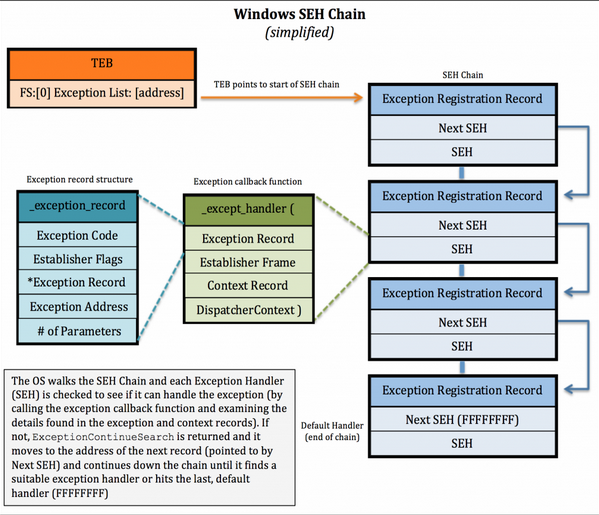

Basic information
What is Structured Exception Handling?
Structured Exception Handling (SEH) is a Windows mechanism for handling both hardware and software exceptions consistently.
Those with programming experience might be familiar with the exception handling construct which is often represented as a try/except or try/catch block of code. For the purposes of this discussion, I’ll reference the Microsoft extension to the C/C++ languages which looks as follows:
__try { // the block of code to try (aka the "guarded body") ...}__except (exception filter) { // the code to run in the event of an exception (aka the "exception handler) ...} The concept is quite simple — try to execute a block of code and if an error/exception occurs, do whatever the “except” block (aka the exception handler) says. The exception handler is nothing more than another block of code that tells the system what to do in the event of an exception. In other words, it handles the exception.
Exception handlers might be implemented by the application (via the above __try/__except construct) or by the OS itself. Since there are many different types of errors (divide by zero, out of bounds, etc), there can be many corresponding exception handlers.
Regardless of where the exception handler is defined (application vs. OS) or what type of exception it is designed to handle, all handlers are managed centrally and consistently by Windows SEH via a collection of designated data structures and functions, which I’ll cover at a high level in the next section.
Major Components of SEH
For every exception handler, there is an Exception Registration Record structure which looks like this:
typedef struct _EXCEPTION_REGISTRATION_RECORD { struct _EXCEPTION_REGISTRATION_RECORD *Next; PEXCEPTION_ROUTINE Handler; } EXCEPTION_REGISTRATION_RECORD, *PEXCEPTION_REGISTRATION_RECORD; source:
http://blogs.technet.com/b/srd/archive/2009/02/02/preventing-the-exploitation-of-seh-overwrites-with-sehop.aspxThese registration records are chained together to form a linked list. The first field in the registration record (*Next) is a pointer to the next _EXCEPTION_REGISTRATION_RECORD in the SEH chain. In other words, you can navigate the SEH chain from top to bottom by using the *Next address. The second field (Handler), is a pointer to an exception handler function which looks like this:
EXCEPTION_DISPOSITION __cdecl _except_handler( struct _EXCEPTION_RECORD *ExceptionRecord, oid EstablisherFrame, struct _CONTEXT *ContextRecord, void * DispatcherContext); The first function parameter is a pointer to an _EXCEPTION_RECORD structure. As you can see below, this structure holds information about the given exception including the exception code, exception address, and number of parameters.
typedef struct _EXCEPTION_RECORD { DWORD ExceptionCode; DWORD ExceptionFlags; struct _EXCEPTION_RECORD *ExceptionRecord; PVOID ExceptionAddress; DWORD NumberParameters; DWORD ExceptionInformation[EXCEPTION_MAXIMUM_PARAMETERS];} EXCEPTION_RECORD; source:
http://www.microsoft.com/msj/0197/exception/exception.aspx The _except_handler function uses this information (in addition to the registers data provided in the ContextRecord parameter) to determine if the exception can be handled by the current exception handler or if it needs to move to the next registration record. The EstablisherFrame parameter also plays an important role, which we’ll get to in a bit.
The EXCEPTION_DISPOSITION value returned by the _except_handler function tells the OS whether the exception was successfully handled (returns a value of ExceptionContinueExecution) or if it must continue to look for another handler (returns a value of ExceptionContinueSearch).
So how does Windows SEH use the registration record, handler function, and exception record structure when trying to handle an exception? When an exception occurs, the OS starts at the top of the chain and checks the first _EXCEPTION_REGISTRATION_RECORD Handler function to see if it can handle the given error (based on the information passed in the ExceptionRecord and ContextRecord parameters). If not, it will move to the next _EXCEPTION_REGISTRATION_RECORD (using the address pointed to by *Next). It will continue moving down the chain in this manner until it finds the appropriate exception handler function. Windows places a default/generic exception handler at the end of the chain to help ensure the exception will be handled in some manner (represented by FFFFFFFF) at which point you’ll likely see the “…has encountered a problem and needs to close” message.
Each thread has its own SEH chain. The OS knows how to locate the start of this chain by referencing the ExceptionList address of the thread information/environment block (TIB/TEB) which is located at FS:[0]. Here’s a basic diagram of the Windows SEH chain with a simplified version of the _EXCEPTION_REGISTRATION_RECORD:
